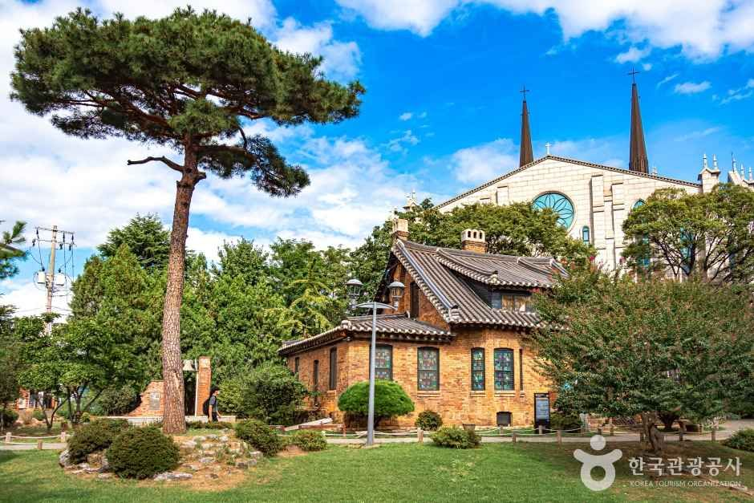
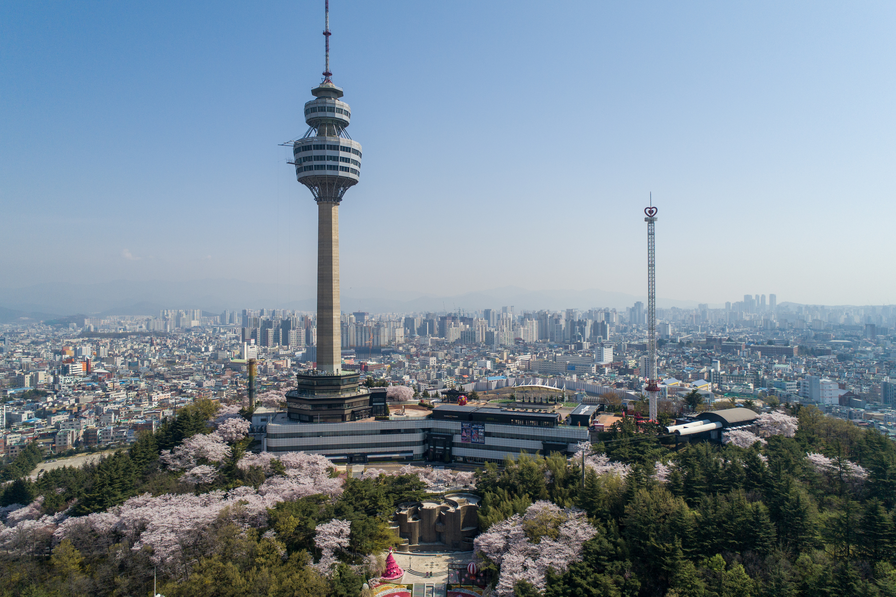
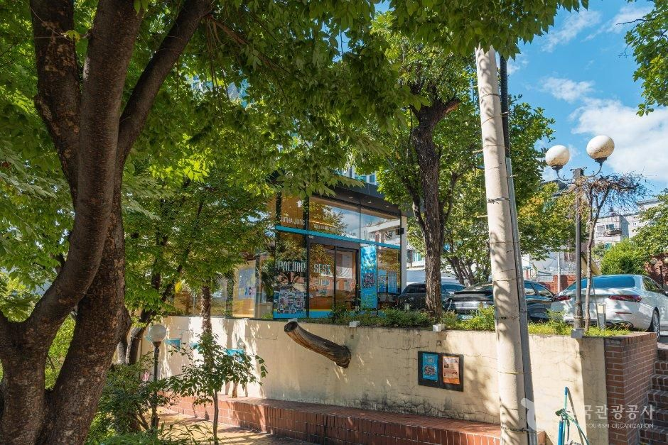
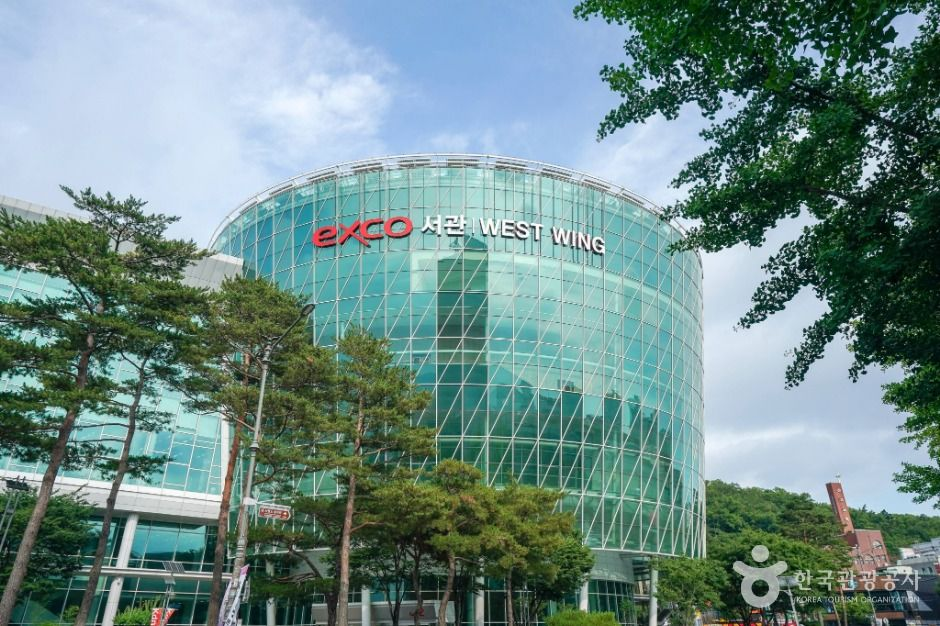
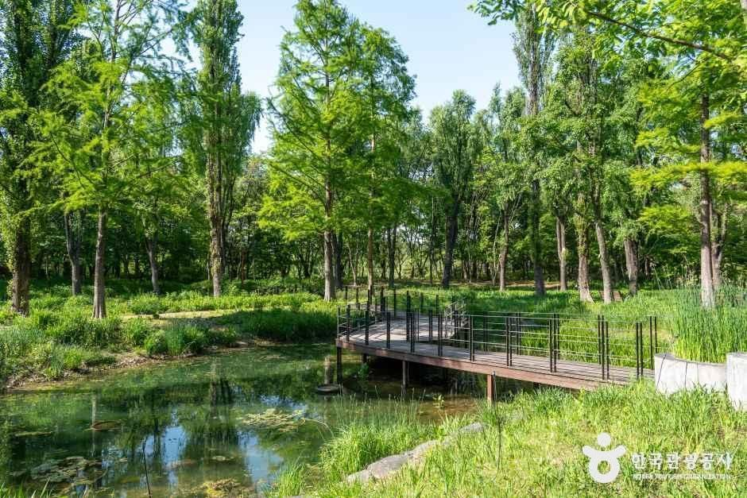
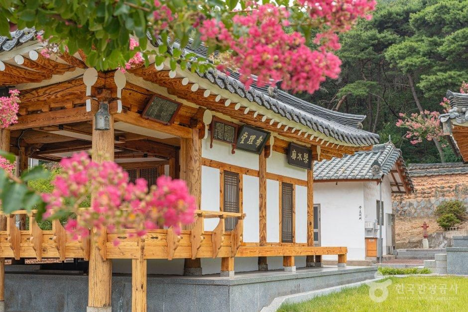
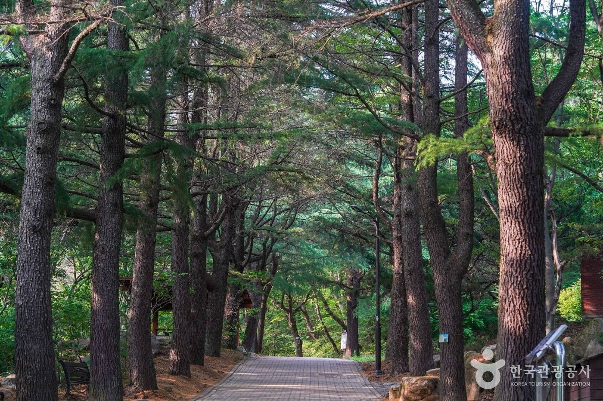
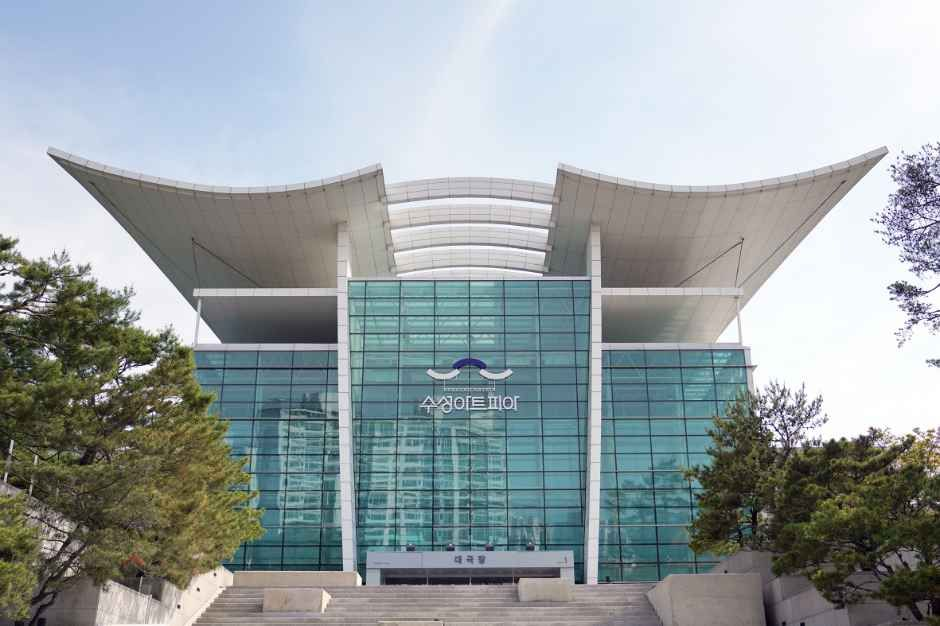

01 / 06DAEGU TOUR DOCENT · LOCAL STORIES
대구의 역사와 명소,
깊이 있게 만나다.
팔공산과 근대 골목, 오래된 시장과 오늘의 문화까지.
전문
도슨트의 해설로 대구 관광을 더 깊이 경험하세요.
대구 관광 코스 보기 ↗
역사 · 문화 · 명소를 잇는 해설 여행

역사와 문화가 살아 있는 도시DAEGU · HISTORY · CULTURE
DAEGU KOREA
VISITAND
DISCOVER
35°52' N — 128°36' E
01 DISCOVER DAEGU
명소를 넘어
대구의 역사와 문화를
이해하도록.
오래된 골목의 이름에는 누군가의 시간이 담겨 있고, 익숙한 시장의 소리에는 이 도시의 하루가 흐릅니다.
대구도담 관광 도슨트는 장소에 얽힌 역사와 인물, 문화적 맥락을 들려드립니다. 익숙한 명소도 해설과 함께하면 새로운 의미로 다가옵니다.
도슨트 해설 알아보기 ↗01A THE CITY IN LAYERS
역사가 쌓이고
오늘의 문화가 피어나는 곳.
대구는 오래된 시간과 새로운 감각이 한 도시 안에 공존합니다. 근대 건축의 흔적부터 지역 예술과 생활문화까지, 명소를 연결해 도시의 맥락을 읽어드립니다.
테마별 관광 코스 보기 ↗
A CITY WITH MANY STORIES · DAEGU
02 DAEGU TOUR COLLECTION
대구의 대표 명소를
새로운 시선으로.
역사와 문화, 자연과 도심을 아우르는
대구 관광 코스를
만나보세요.

02 / 06
03 / 06
04 / 06
05 / 06
06 / 06
A CITY IS MADE OF STORIES.
03 YOUR DAEGU TOUR DOCENT
전문 해설로 만나는
대구의 역사와 문화.
대구의 역사와 지역 문화를 깊이 있게 안내하는 관광 도슨트가 주요 명소의 배경과 의미를 정확하고 흥미롭게 설명합니다. 여행자의 관심사에 맞춰 해설의 초점을 조정합니다.
06최대 6명
집중 해설
집중 해설
01:1관심사 맞춤
해설 안내
해설 안내
∞깊이 있는
역사와 문화
역사와 문화
PLAN YOUR DAEGU EXPERIENCE
대구의 역사와 명소,
도슨트와 만나보세요.
방문 희망 명소와 일정을 알려주세요.
도슨트가 맞춤 관광 해설을
안내해 드립니다.